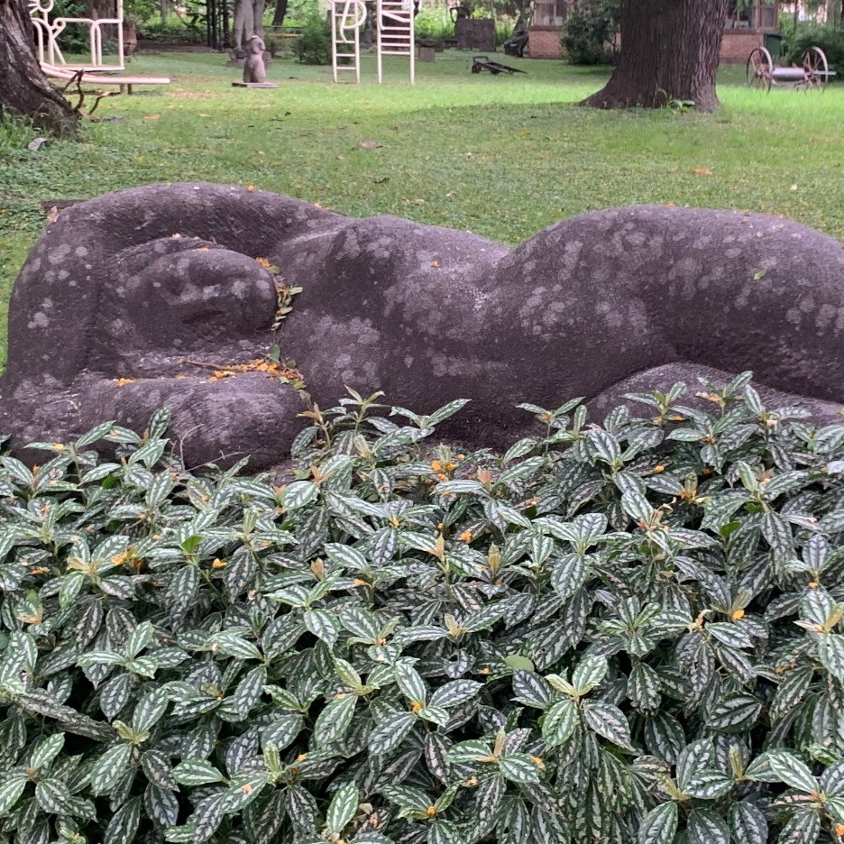
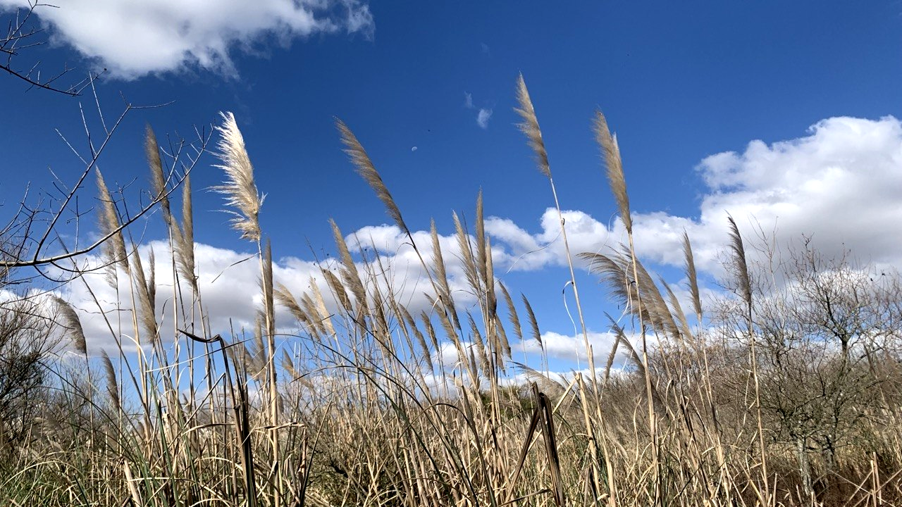

⁙༚༅༚༻-. ecosistemas que también están .-༺༚༅༚⁙
๑∗.Proyecto en proceso…∗๑ agosto 2026
La Lenteja de agua es una planta acuática flotante que suele habitar algunos tramos del río, lagunas y cursos de agua dulce y prolifera a partir de la acumulación de nutrientes en el agua. Es muy valorada por su rápido crecimiento y su capacidad depuradora, ya que es capaz de absorber no sólo el nitrógeno del agua en la que se encuentra, sino también el carbono de la atmósfera.
“Ecosistemas que también están” nace del deseo de registrar especies vegetales propias de la ciudad donde vivo, como una forma de mantener presente una parte del ecosistema del cual somos parte. La acción de registrar una especie y su entorno (visual y sonoro) se lleva a cabo en un espacio y tiempo específico, que posiblemente sea muy distinto dentro de 15 años, y visibilizar eso creo que también es interesante.
Para quienes vivimos en ciudades, la biodiversidad representa una oportunidad para conectarnos con la naturaleza, y no sólo desde una perspectiva ambiental sino también desde la salud anímica y física: cuántas veces habrán mejorado mis ánimos después de caminar un par de horas por un parque o una reserva ecológica…
La Salvia azul es un arbusto que puede alcanzar entre 1,50 y 2 metros de altura. Gracias a su floración, que se produce durante casi todo el año, atrae a muchos insectos y también a aves como los picaflores.
Actualmente, muchas de las ciudades en Argentina siguen expandiéndose de formas encapsuladas, alejándose de todo aquello que pueda obstruir su dominio y “progreso” sobre el territorio. El problema es que, en su acelerada expansión, las ciudades carecen de alternativas para un crecimiento más sustentable, equitativo y accesible. “La expansión urbana se realiza además sobre tierras que a menudo cumplen funciones ambientales importantes, como humedales, recargas de acuíferos y reservas de biodiversidad ecológica.” 1*
Al perder contacto con nuestro propio hábitat, como sociedad también perdemos una parte de nuestra identidad cultural, si todas las ciudades se construyen y se ven iguales… ¿Qué nos diferencia unas de las otras?

Otras especies nativas que se encuentran en Buenos Aires

Mi proyección con esta investigación es escanear diversas zonas de Buenos Aires (AMBA) y plasmar sus propios paisajes visuales y sonoros, quizás a modo de “enciclopedia viva”.
Este proyecto es parte de mi experiencia en La Escuela de Sensibilización Tecnológica Latinoamericana, un programa de formación en línea del Centro de Cultura Digital (México), coproducido junto a Toda la Teoría del Universo (Chile) y Asimtria.org (Perú).
.
Referencias
1* Lanfranchi, G., Cordara, C., Duarte, J. I., Ferlicca, F., Gimenez Hutton, T., & Rodriguez, S. (2018). ¿Cómo crecen las ciudades argentinas? Estudio de la expansión urbana de los 33 grandes aglomerados. CIPPEC. https://www.cippec.org/publicacion/como-crecen-las-ciudades-argentinas-estudio-de-la-expansion-urbana-de-los-33-grandes-aglomerados/
Haene, E. (2018). Los jardines con plantas nativas aportan biodiversidad urbana: estudio de caso en la Ciudad Autónoma de Buenos Aires, Argentina. Perspectivas: revista científica de la Universidad de Belgrano-ISSN 2618-2246, 1(1), 219-238.
Ganduglia, O., Zanetta, E., & Faggi, A. (2016). El rol de las plantas exóticas en la homogeneización y diferenciación florística en Argentina.
← atrás ←